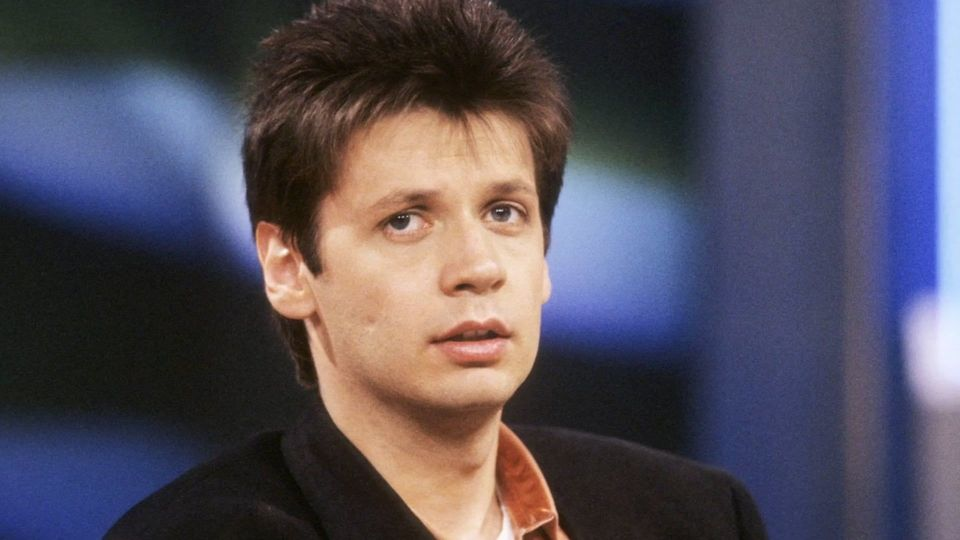
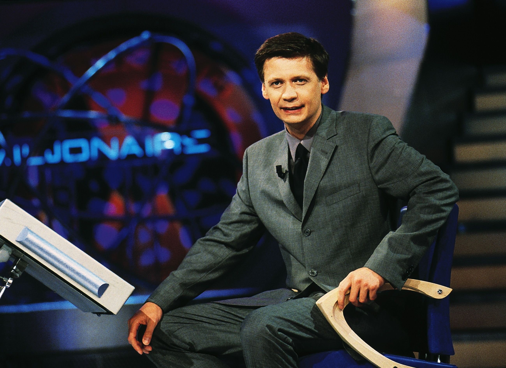
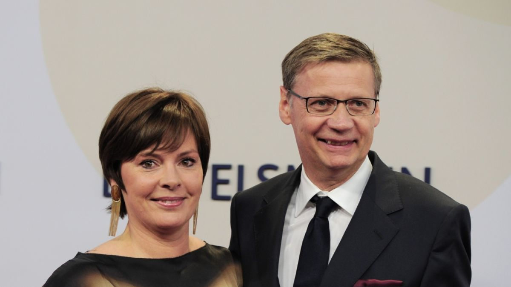
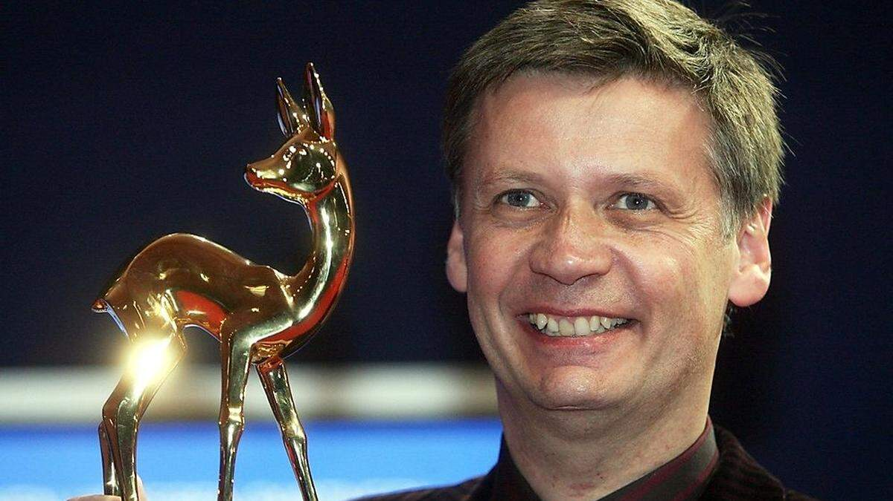

Günther Jauch is a well-known German television host, journalist, and producer. He is especially famous for hosting the quiz show "Who Wants to Be a Millionaire?", which he has been hosting since 1999 on RTL. His career in German television spans decades, and he is regarded as one of the country's most beloved hosts.
Early Life and Education

Günther Jauch was born on July 13, 1956 in Münster. He attended the humanistic high school in Oldenburg and graduated there. After school, he began studying law, but later switched to journalism and political science at the Ludwig Maximilian University of Munich. During this time, he completed a journalistic training program at the prestigious German Journalism School in Munich.
Career

Günther Jauch’s career began in radio before he switched to television. Some highlights of his career include:
1985–1989: Co-host of the sports program "Das aktuelle Sportstudio" on ZDF
1990–1995: Main host of the ARD program "Sport-Schau"
Since 1999: Host of "Who Wants to Be a Millionaire?"
2011–2018: Host of the political talk show "Günther Jauch" on ARD
In addition, Günther Jauch is a producer and co-owner of the company i&u TV, which produces various TV formats.
Personal Life

Günther Jauch has been married to Dorothea Sihler since 2006. The couple has four children, two of whom are adopted. The family lives in Potsdam, where Jauch has restored several historic buildings. He is known for his social engagement and generosity in donations.
Notable Features

Günther Jauch is very popular among viewers for his humorous and charming manner.
He has won awards such as the Bambi, the German Television Award, and the Grimme Prize.
Despite his popularity, he is very protective of his privacy.
Günther Jauch remains a prominent figure in German television and has had a lasting impact on the entertainment industry.